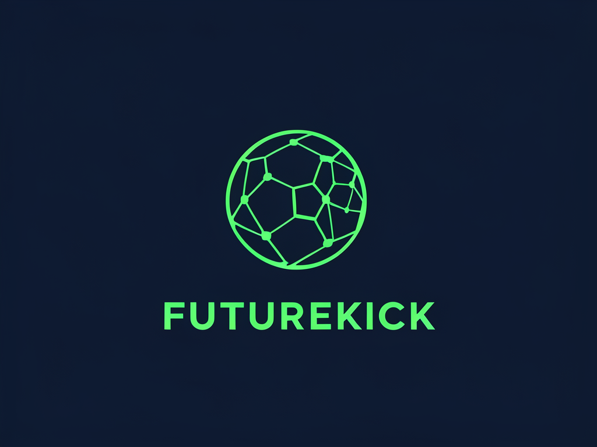

La inteligencia artificial que entiende el juego. Análisis de rendimiento, scouting predictivo y datos en tiempo real para el fútbol del futuro.
Prompts desarrollados con modelos de lenguaje para explorar el potencial de la IA aplicada al fútbol profesional.
Actuá como analista de datos deportivos de una startup de IA llamada FutureKick. Describí cómo usarías modelos de inteligencia artificial para analizar el rendimiento de un mediocampista en un partido de fútbol. Incluí métricas clave, tipo de datos que recolectarías y cómo presentarías los resultados al cuerpo técnico.
Sos el sistema de scouting inteligente de FutureKick. Un club de la liga argentina necesita un delantero centro de menos de 23 años, potente en el juego aéreo y con buena salida desde el área. Sugerí un perfil ideal de jugador y explicá qué variables de IA usarías para encontrarlo en bases de datos de ligas menores.
Escribí una sección 'Visión 2030' para el sitio web de FutureKick, una startup que usa IA para transformar el fútbol profesional. El tono debe ser inspirador, tecnológico y apasionado. Máximo 150 palabras.
Explicá de forma clara y accesible qué es un modelo fundacional de inteligencia artificial, cómo funciona y por qué es relevante para una startup como FutureKick que trabaja con datos deportivos. Usá un lenguaje que pueda entender alguien sin conocimientos técnicos profundos.
Imágenes generadas con herramientas de IA a partir de prompts diseñados para la identidad visual de FutureKick.

"Bienvenidos a FutureKick. Somos una startup que cree que el fútbol del futuro se juega con datos. Usamos inteligencia artificial para analizar el rendimiento de cada jugador, detectar talentos ocultos en ligas menores y ayudar a los cuerpos técnicos a tomar decisiones más inteligentes. Porque el próximo grande puede estar en cualquier cancha... y nosotros lo vamos a encontrar primero."
Soy Galindez Tomas, estudiante de Inteligencia Artificial con pasión por el fútbol, la tecnología y el emprendimiento. Este portfolio refleja mi aprendizaje durante el curso, explorando cómo las herramientas de IA generativa pueden aplicarse a industrias reales.
FutureKick es mi visión de cómo la inteligencia artificial puede transformar el deporte más popular del mundo: haciendo el juego más justo, más inteligente y más apasionante para todos.
En FutureKick creemos que el fútbol del futuro se construye hoy, impulsado por inteligencia artificial. Para 2030, nuestra visión es transformar cada decisión deportiva en una ventaja competitiva basada en datos. Desde el scouting hasta la estrategia en tiempo real, la IA permitirá comprender el juego a un nivel nunca antes visto. Imaginamos clubes que anticipan el rendimiento de sus jugadores, optimizan cada entrenamiento y descubren talento oculto en cualquier rincón del mundo. FutureKick no solo analiza el fútbol: lo redefine. Combinamos tecnología, pasión y conocimiento para potenciar a quienes viven el juego dentro y fuera de la cancha. El futuro del fútbol es inteligente. Y ya empezó.